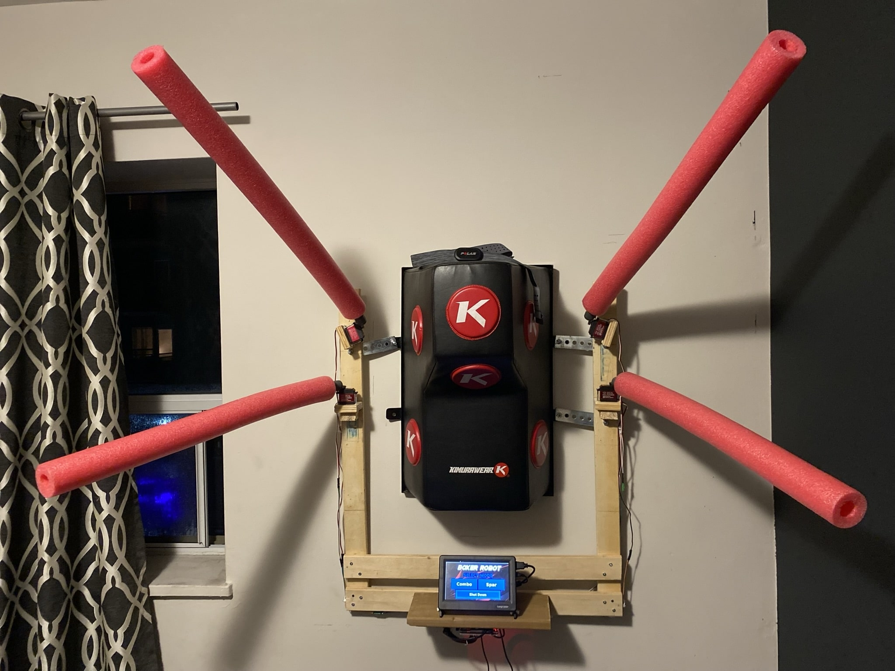
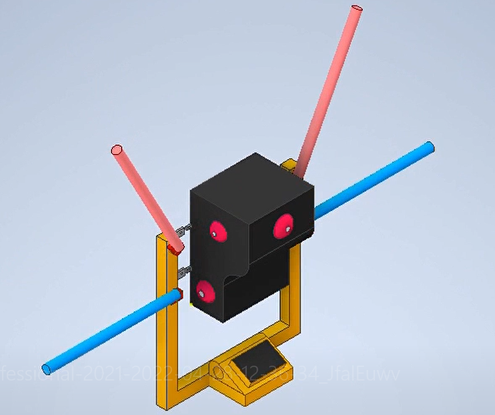
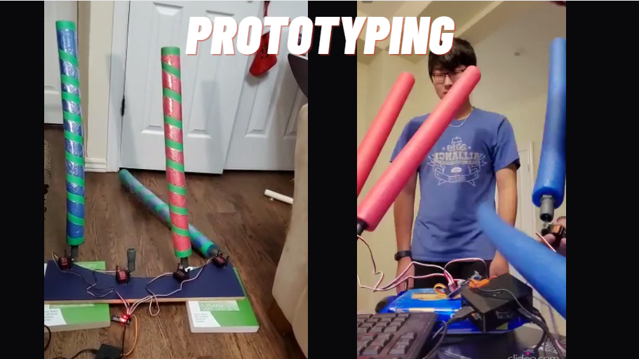
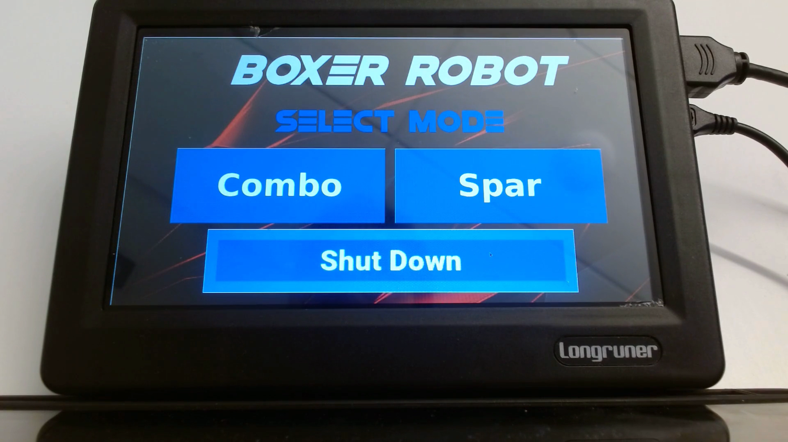
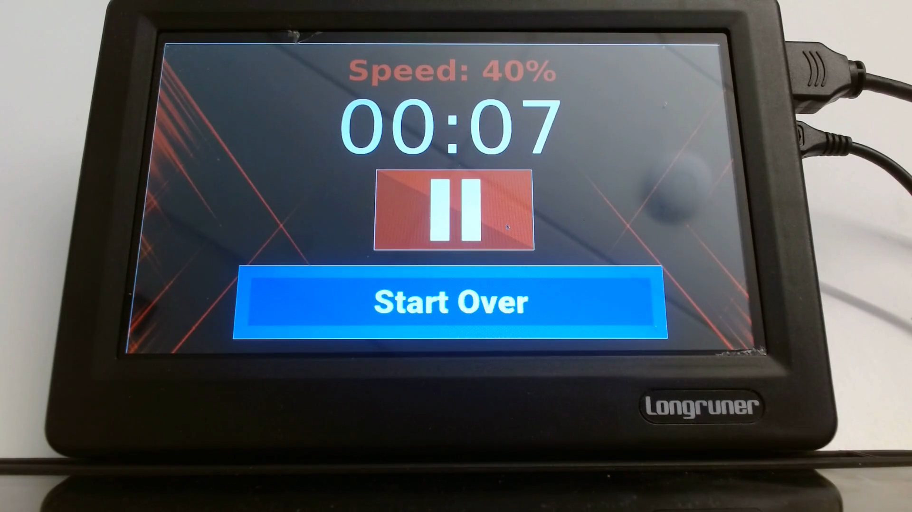

Portfolio Overview
The Boxing Robot
By George Yazji and Grace Xing
About This Project
- Collaborated with Grace Xing to design and build a four-armed boxing robot
simulating real-life opponents to enhance user boxing skills.
- Customized the design based on an existing market product to meet client needs
while significantly reducing overall cost.
- Engineered movement using four high-torque servo motors controlled via an
Adafruit driver, with pool noodles as moving obstacles.
- Developed two training modes: combination mode (user-controlled) and spar mode
(random), along with timed practice sessions.
- Designed a graphical user interface (GUI) using Python Tkinter, displayed on a
Raspberry Pi 4 screen for intuitive interaction.
- Integrated multiple speed options, enabling tailored training experiences for
users.
Project Media




